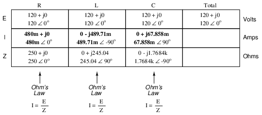
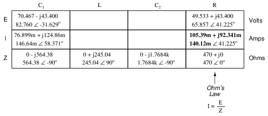

Before we begin to explore the effects of resistors, inductors, and capacitors connected together in the same AC circuits, let's briefly review some basic terms and facts.
Resistance is essentially friction against the motion of electrons. It is present in all conductors to some extent (except superconductors!), most notably in resistors. When alternating current goes through a resistance, a voltage drop is produced that is in-phase with the current. Resistance is mathematically symbolized by the letter “R” and is measured in the unit of ohms (Ω).
Reactance is essentially inertia against the motion of electrons. It is present anywhere electric or magnetic fields are developed in proportion to applied voltage or current, respectively; but most notably in capacitors and inductors. When alternating current goes through a pure reactance, a voltage drop is produced that is 90o out of phase with the current. Reactance is mathematically symbolized by the letter “X” and is measured in the unit of ohms (Ω).
Impedance is a comprehensive expression of any and all forms of opposition to electron flow, including both resistance and reactance. It is present in all circuits, and in all components. When alternating current goes through an impedance, a voltage drop is produced that is somewhere between 0o and 90o out of phase with the current. Impedance is mathematically symbolized by the letter “Z” and is measured in the unit of ohms (Ω), in complex form.
Perfect resistors (Figure below) possess resistance, but not reactance. Perfect inductors and perfect capacitors (Figure below) possess reactance but no resistance. All components possess impedance, and because of this universal quality, it makes sense to translate all component values (resistance, inductance, capacitance) into common terms of impedance as the first step in analyzing an AC circuit.
Perfect resistor, inductor, and capacitor.
The impedance phase angle for any component is the phase shift between voltage across that component and current through that component. For a perfect resistor, the voltage drop and current are always in phase with each other, and so the impedance angle of a resistor is said to be 0o. For an perfect inductor, voltage drop always leads current by 90o, and so an inductor's impedance phase angle is said to be +90o. For a perfect capacitor, voltage drop always lags current by 90o, and so a capacitor's impedance phase angle is said to be -90o.
Impedances in AC behave analogously to resistances in DC circuits: they add in series, and they diminish in parallel. A revised version of Ohm's Law, based on impedance rather than resistance, looks like this:

Kirchhoff's Laws and all network analysis methods and theorems are true for AC circuits as well, so long as quantities are represented in complex rather than scalar form. While this qualified equivalence may be arithmetically challenging, it is conceptually simple and elegant. The only real difference between DC and AC circuit calculations is in regard to power. Because reactance doesn't dissipate power as resistance does, the concept of power in AC circuits is radically different from that of DC circuits. More on this subject in a later chapter!
Let's take the following example circuit and analyze it: (Figure below)
Example series R, L, and C circuit.
The first step is to determine the reactances (in ohms) for the inductor and the capacitor.
The next step is to express all resistances and reactances in a mathematically common form: impedance. (Figure below) Remember that an inductive reactance translates into a positive imaginary impedance (or an impedance at +90o), while a capacitive reactance translates into a negative imaginary impedance (impedance at -90o). Resistance, of course, is still regarded as a purely “real” impedance (polar angle of 0o):
Example series R, L, and C circuit with component values replaced by impedances.
Now, with all quantities of opposition to electric current expressed in a common, complex number format (as impedances, and not as resistances or reactances), they can be handled in the same way as plain resistances in a DC circuit. This is an ideal time to draw up an analysis table for this circuit and insert all the “given” figures (total voltage, and the impedances of the resistor, inductor, and capacitor).
Unless otherwise specified, the source voltage will be our reference for phase shift, and so will be written at an angle of 0o. Remember that there is no such thing as an “absolute” angle of phase shift for a voltage or current, since its always a quantity relative to another waveform. Phase angles for impedance, however (like those of the resistor, inductor, and capacitor), are known absolutely, because the phase relationships between voltage and current at each component are absolutely defined.
Notice that I'm assuming a perfectly reactive inductor and capacitor, with impedance phase angles of exactly +90 and -90o, respectively. Although real components won't be perfect in this regard, they should be fairly close. For simplicity, I'll assume perfectly reactive inductors and capacitors from now on in my example calculations except where noted otherwise.
Since the above example circuit is a series circuit, we know that the total circuit impedance is equal to the sum of the individuals, so:
Inserting this figure for total impedance into our table:
We can now apply Ohm's Law (I=E/R) vertically in the “Total” column to find total current for this series circuit:
Being a series circuit, current must be equal through all components. Thus, we can take the figure obtained for total current and distribute it to each of the other columns:
Now we're prepared to apply Ohm's Law (E=IZ) to each of the individual component columns in the table, to determine voltage drops:
Notice something strange here: although our supply voltage is only 120 volts, the voltage across the capacitor is 137.46 volts! How can this be? The answer lies in the interaction between the inductive and capacitive reactances. Expressed as impedances, we can see that the inductor opposes current in a manner precisely opposite that of the capacitor. Expressed in rectangular form, the inductor's impedance has a positive imaginary term and the capacitor has a negative imaginary term. When these two contrary impedances are added (in series), they tend to cancel each other out! Although they're still added together to produce a sum, that sum is actually less than either of the individual (capacitive or inductive) impedances alone. It is analogous to adding together a positive and a negative (scalar) number: the sum is a quantity less than either one's individual absolute value.
If the total impedance in a series circuit with both inductive and capacitive elements is less than the impedance of either element separately, then the total current in that circuit must be greater than what it would be with only the inductive or only the capacitive elements there. With this abnormally high current through each of the components, voltages greater than the source voltage may be obtained across some of the individual components! Further consequences of inductors' and capacitors' opposite reactances in the same circuit will be explored in the next chapter.
Once you've mastered the technique of reducing all component values to impedances (Z), analyzing any AC circuit is only about as difficult as analyzing any DC circuit, except that the quantities dealt with are vector instead of scalar. With the exception of equations dealing with power (P), equations in AC circuits are the same as those in DC circuits, using impedances (Z) instead of resistances (R). Ohm's Law (E=IZ) still holds true, and so do Kirchhoff's Voltage and Current Laws.
To demonstrate Kirchhoff's Voltage Law in an AC circuit, we can look at the answers we derived for component voltage drops in the last circuit. KVL tells us that the algebraic sum of the voltage drops across the resistor, inductor, and capacitor should equal the applied voltage from the source. Even though this may not look like it is true at first sight, a bit of complex number addition proves otherwise:
Aside from a bit of rounding error, the sum of these voltage drops does equal 120 volts. Performed on a calculator (preserving all digits), the answer you will receive should be exactly 120 + j0 volts.
We can also use SPICE to verify our figures for this circuit: (Figure below)
Example series R, L, and C SPICE circuit.
ac r-l-c circuit v1 1 0 ac 120 sin r1 1 2 250 l1 2 3 650m c1 3 0 1.5u .ac lin 1 60 60 .print ac v(1,2) v(2,3) v(3,0) i(v1) .print ac vp(1,2) vp(2,3) vp(3,0) ip(v1) .end
freq v(1,2) v(2,3) v(3) i(v1) 6.000E+01 1.943E+01 1.905E+01 1.375E+02 7.773E-02 freq vp(1,2) vp(2,3) vp(3) ip(v1) 6.000E+01 8.068E+01 1.707E+02 -9.320E+00 -9.932E+01
The SPICE simulation shows our hand-calculated results to be accurate.
As you can see, there is little difference between AC circuit analysis and DC circuit analysis, except that all quantities of voltage, current, and resistance (actually, impedance) must be handled in complex rather than scalar form so as to account for phase angle. This is good, since it means all you've learned about DC electric circuits applies to what you're learning here. The only exception to this consistency is the calculation of power, which is so unique that it deserves a chapter devoted to that subject alone.
We can take the same components from the series circuit and rearrange them into a parallel configuration for an easy example circuit: (Figure below)

Example R, L, and C parallel circuit.
The fact that these components are connected in parallel instead of series now has absolutely no effect on their individual impedances. So long as the power supply is the same frequency as before, the inductive and capacitive reactances will not have changed at all: (Figure below)

Example R, L, and C parallel circuit with impedances replacing component values.
With all component values expressed as impedances (Z), we can set up an analysis table and proceed as in the last example problem, except this time following the rules of parallel circuits instead of series:
Knowing that voltage is shared equally by all components in a parallel circuit, we can transfer the figure for total voltage to all component columns in the table:
Now, we can apply Ohm's Law (I=E/Z) vertically in each column to determine current through each component:

There are two strategies for calculating total current and total impedance. First, we could calculate total impedance from all the individual impedances in parallel (ZTotal = 1/(1/ZR + 1/ZL + 1/ZC), and then calculate total current by dividing source voltage by total impedance (I=E/Z). However, working through the parallel impedance equation with complex numbers is no easy task, with all the reciprocations (1/Z). This is especially true if you're unfortunate enough not to have a calculator that handles complex numbers and are forced to do it all by hand (reciprocate the individual impedances in polar form, then convert them all to rectangular form for addition, then convert back to polar form for the final inversion, then invert). The second way to calculate total current and total impedance is to add up all the branch currents to arrive at total current (total current in a parallel circuit -- AC or DC -- is equal to the sum of the branch currents), then use Ohm's Law to determine total impedance from total voltage and total current (Z=E/I).
Either method, performed properly, will provide the correct answers. Let's try analyzing this circuit with SPICE and see what happens: (Figure below)
Example parallel R, L, and C SPICE circuit. Battery symbols are “dummy” voltage sources for SPICE to use as current measurement points. All are set to 0 volts.
ac r-l-c circuit v1 1 0 ac 120 sin vi 1 2 ac 0 vir 2 3 ac 0 vil 2 4 ac 0 rbogus 4 5 1e-12 vic 2 6 ac 0 r1 3 0 250 l1 5 0 650m c1 6 0 1.5u .ac lin 1 60 60 .print ac i(vi) i(vir) i(vil) i(vic) .print ac ip(vi) ip(vir) ip(vil) ip(vic) .end
freq i(vi) i(vir) i(vil) i(vic) 6.000E+01 6.390E-01 4.800E-01 4.897E-01 6.786E-02 freq ip(vi) ip(vir) ip(vil) ip(vic) 6.000E+01 -4.131E+01 0.000E+00 -9.000E+01 9.000E+01
It took a little bit of trickery to get SPICE working as we would like on this circuit (installing “dummy” voltage sources in each branch to obtain current figures and installing the “dummy” resistor in the inductor branch to prevent a direct inductor-to-voltage source loop, which SPICE cannot tolerate), but we did get the proper readings. Even more than that, by installing the dummy voltage sources (current meters) in the proper directions, we were able to avoid that idiosyncrasy of SPICE of printing current figures 180o out of phase. This way, our current phase readings came out to exactly match our hand calculations.
Now that we've seen how series and parallel AC circuit analysis is not fundamentally different than DC circuit analysis, it should come as no surprise that series-parallel analysis would be the same as well, just using complex numbers instead of scalar to represent voltage, current, and impedance.
Take this series-parallel circuit for example: (Figure below)
Example series-parallel R, L, and C circuit.
The first order of business, as usual, is to determine values of impedance (Z) for all components based on the frequency of the AC power source. To do this, we need to first determine values of reactance (X) for all inductors and capacitors, then convert reactance (X) and resistance (R) figures into proper impedance (Z) form:

Now we can set up the initial values in our table:
Being a series-parallel combination circuit, we must reduce it to a total impedance in more than one step. The first step is to combine L and C2 as a series combination of impedances, by adding their impedances together. Then, that impedance will be combined in parallel with the impedance of the resistor, to arrive at another combination of impedances. Finally, that quantity will be added to the impedance of C1 to arrive at the total impedance.
In order that our table may follow all these steps, it will be necessary to add additional columns to it so that each step may be represented. Adding more columns horizontally to the table shown above would be impractical for formatting reasons, so I will place a new row of columns underneath, each column designated by its respective component combination:
Calculating these new (combination) impedances will require complex addition for series combinations, and the “reciprocal” formula for complex impedances in parallel. This time, there is no avoidance of the reciprocal formula: the required figures can be arrived at no other way!
Seeing as how our second table contains a column for “Total,” we can safely discard that column from the first table. This gives us one table with four columns and another table with three columns.
Now that we know the total impedance (818.34 Ω ∠ -58.371o) and the total voltage (120 volts ∠ 0o), we can apply Ohm's Law (I=E/Z) vertically in the “Total” column to arrive at a figure for total current:
At this point we ask ourselves the question: are there any components or component combinations which share either the total voltage or the total current? In this case, both C1 and the parallel combination R//(L--C2) share the same (total) current, since the total impedance is composed of the two sets of impedances in series. Thus, we can transfer the figure for total current into both columns:
Now, we can calculate voltage drops across C1 and the series-parallel combination of R//(L--C2) using Ohm's Law (E=IZ) vertically in those table columns:
A quick double-check of our work at this point would be to see whether or not the voltage drops across C1 and the series-parallel combination of R//(L--C2) indeed add up to the total. According to Kirchhoff's Voltage Law, they should!
That last step was merely a precaution. In a problem with as many steps as this one has, there is much opportunity for error. Occasional cross-checks like that one can save a person a lot of work and unnecessary frustration by identifying problems prior to the final step of the problem.
After having solved for voltage drops across C1 and the combination R//(L--C2), we again ask ourselves the question: what other components share the same voltage or current? In this case, the resistor (R) and the combination of the inductor and the second capacitor (L--C2) share the same voltage, because those sets of impedances are in parallel with each other. Therefore, we can transfer the voltage figure just solved for into the columns for R and L--C2:
Now we're all set for calculating current through the resistor and through the series combination L--C2. All we need to do is apply Ohm's Law (I=E/Z) vertically in both of those columns:

Another quick double-check of our work at this point would be to see if the current figures for L--C2 and R add up to the total current. According to Kirchhoff's Current Law, they should:
Since the L and C2 are connected in series, and since we know the current through their series combination impedance, we can distribute that current figure to the L and C2 columns following the rule of series circuits whereby series components share the same current:
With one last step (actually, two calculations), we can complete our analysis table for this circuit. With impedance and current figures in place for L and C2, all we have to do is apply Ohm's Law (E=IZ) vertically in those two columns to calculate voltage drops.
Now, let's turn to SPICE for a computer verification of our work:
Example series-parallel R, L, C SPICE circuit.
ac series-parallel r-l-c circuit v1 1 0 ac 120 sin vit 1 2 ac 0 vilc 3 4 ac 0 vir 3 6 ac 0 c1 2 3 4.7u l 4 5 650m c2 5 0 1.5u r 6 0 470 .ac lin 1 60 60 .print ac v(2,3) vp(2,3) i(vit) ip(vit) .print ac v(4,5) vp(4,5) i(vilc) ip(vilc) .print ac v(5,0) vp(5,0) i(vilc) ip(vilc) .print ac v(6,0) vp(6,0) i(vir) ip(vir) .end
freq v(2,3) vp(2,3) i(vit) ip(vit) C1 6.000E+01 8.276E+01 -3.163E+01 1.466E-01 5.837E+01
freq v(4,5) vp(4,5) i(vilc) ip(vilc) L 6.000E+01 1.059E+01 -1.388E+02 4.323E-02 1.312E+02
freq v(5) vp(5) i(vilc) ip(vilc) C2 6.000E+01 7.645E+01 4.122E+01 4.323E-02 1.312E+02
freq v(6) vp(6) i(vir) ip(vir) R 6.000E+01 6.586E+01 4.122E+01 1.401E-01 4.122E+01
Each line of the SPICE output listing gives the voltage, voltage phase angle, current, and current phase angle for C1, L, C2, and R, in that order. As you can see, these figures do concur with our hand-calculated figures in the circuit analysis table.
As daunting a task as series-parallel AC circuit analysis may appear, it must be emphasized that there is nothing really new going on here besides the use of complex numbers. Ohm's Law (in its new form of E=IZ) still holds true, as do the voltage and current Laws of Kirchhoff. While there is more potential for human error in carrying out the necessary complex number calculations, the basic principles and techniques of series-parallel circuit reduction are exactly the same.
In the study of DC circuits, the student of electricity comes across a term meaning the opposite of resistance: conductance. It is a useful term when exploring the mathematical formula for parallel resistances: Rparallel = 1 / (1/R1 + 1/R2 + . . . 1/Rn). Unlike resistance, which diminishes as more parallel components are included in the circuit, conductance simply adds. Mathematically, conductance is the reciprocal of resistance, and each 1/R term in the “parallel resistance formula” is actually a conductance.
Whereas the term “resistance” denotes the amount of opposition to flowing electrons in a circuit, “conductance” represents the ease of which electrons may flow. Resistance is the measure of how much a circuit resists current, while conductance is the measure of how much a circuit conducts current. Conductance used to be measured in the unit of mhos, or “ohms” spelled backward. Now, the proper unit of measurement is Siemens. When symbolized in a mathematical formula, the proper letter to use for conductance is “G”.
Reactive components such as inductors and capacitors oppose the flow of electrons with respect to time, rather than with a constant, unchanging friction as resistors do. We call this time-based opposition, reactance, and like resistance we also measure it in the unit of ohms.
As conductance is the complement of resistance, there is also a complementary expression of reactance, called susceptance. Mathematically, it is equal to 1/X, the reciprocal of reactance. Like conductance, it used to be measured in the unit of mhos, but now is measured in Siemens. Its mathematical symbol is “B”, unfortunately the same symbol used to represent magnetic flux density.
The terms “reactance” and “susceptance” have a certain linguistic logic to them, just like resistance and conductance. While reactance is the measure of how much a circuit reacts against change in current over time, susceptance is the measure of how much a circuit is susceptible to conducting a changing current.
If one were tasked with determining the total effect of several parallel-connected, pure reactances, one could convert each reactance (X) to a susceptance (B), then add susceptances rather than diminish reactances: Xparallel = 1/(1/X1 + 1/X2 + . . . 1/Xn). Like conductances (G), susceptances (B) add in parallel and diminish in series. Also like conductance, susceptance is a scalar quantity.
When resistive and reactive components are interconnected, their combined effects can no longer be analyzed with scalar quantities of resistance (R) and reactance (X). Likewise, figures of conductance (G) and susceptance (B) are most useful in circuits where the two types of opposition are not mixed, i.e. either a purely resistive (conductive) circuit, or a purely reactive (susceptive) circuit. In order to express and quantify the effects of mixed resistive and reactive components, we had to have a new term: impedance, measured in ohms and symbolized by the letter “Z”.
To be consistent, we need a complementary measure representing the reciprocal of impedance. The name for this measure is admittance. Admittance is measured in (guess what?) the unit of Siemens, and its symbol is “Y”. Like impedance, admittance is a complex quantity rather than scalar. Again, we see a certain logic to the naming of this new term: while impedance is a measure of how much alternating current is impeded in a circuit, admittance is a measure of how much current is admitted.
Given a scientific calculator capable of handling complex number arithmetic in both polar and rectangular forms, you may never have to work with figures of susceptance (B) or admittance (Y). Be aware, though, of their existence and their meanings.
With the notable exception of calculations for power (P), all AC circuit calculations are based on the same general principles as calculations for DC circuits. The only significant difference is that fact that AC calculations use complex quantities while DC calculations use scalar quantities. Ohm's Law, Kirchhoff's Laws, and even the network theorems learned in DC still hold true for AC when voltage, current, and impedance are all expressed with complex numbers. The same troubleshooting strategies applied toward DC circuits also hold for AC, although AC can certainly be more difficult to work with due to phase angles which aren't registered by a handheld multimeter.
Power is another subject altogether, and will be covered in its own chapter in this book. Because power in a reactive circuit is both absorbed and released -- not just dissipated as it is with resistors -- its mathematical handling requires a more direct application of trigonometry to solve.
When faced with analyzing an AC circuit, the first step in analysis is to convert all resistor, inductor, and capacitor component values into impedances (Z), based on the frequency of the power source. After that, proceed with the same steps and strategies learned for analyzing DC circuits, using the “new” form of Ohm's Law: E=IZ ; I=E/Z ; and Z=E/I
Remember that only the calculated figures expressed in polar form apply directly to empirical measurements of voltage and current. Rectangular notation is merely a useful tool for us to add and subtract complex quantities together. Polar notation, where the magnitude (length of vector) directly relates to the magnitude of the voltage or current measured, and the angle directly relates to the phase shift in degrees, is the most practical way to express complex quantities for circuit analysis.
Contributors to this chapter are listed in chronological order of their contributions, from most recent to first. See Appendix 2 (Contributor List) for dates and contact information.
Jason Starck (June 2000): HTML document formatting, which led to a much better-looking second edition.
Lessons In Electric Circuits copyright (C) 2000-2023 Tony R. Kuphaldt, under the terms and conditions of the CC BY License.
{kind=link}
{kind=link}
{kind=link}
{kind=link}
{kind=link}
{kind=link}
{kind=link}
{kind=link}